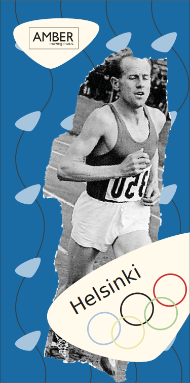

Cette boite a comme thématique les jeux olympiques et pour les années 50,le design est inspiré des JO de Helsinki 1952.
50s
ACHETER

AMBER - moving music - 50s
Caractéristiques techniques:
Type de produit: Véritables écouteurs sans fil
Variante de port :dans l'oreille
Transmission des signaux :Sans fil
Impédance nominale :16 ohms
Sensibilité:108dB
Fréquence de réponse:20Hz-20kHz
Numéro d'article:2063089
EAN :6925281988424
AUTRE PRODUITS